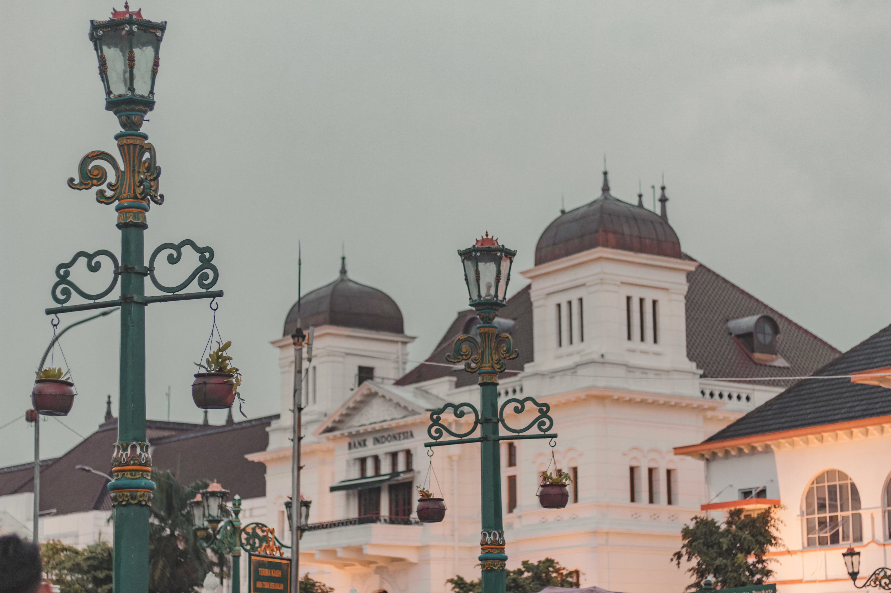
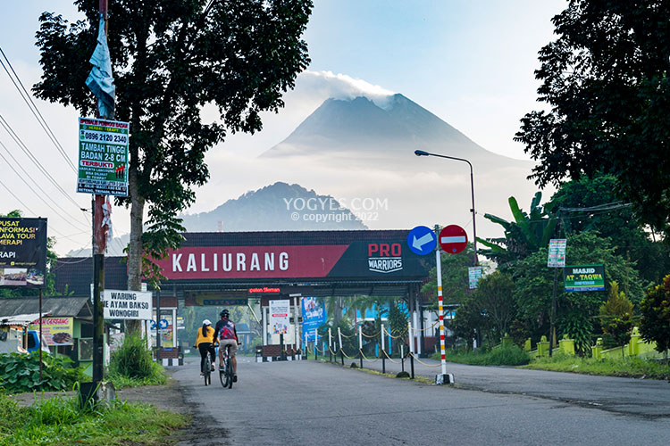
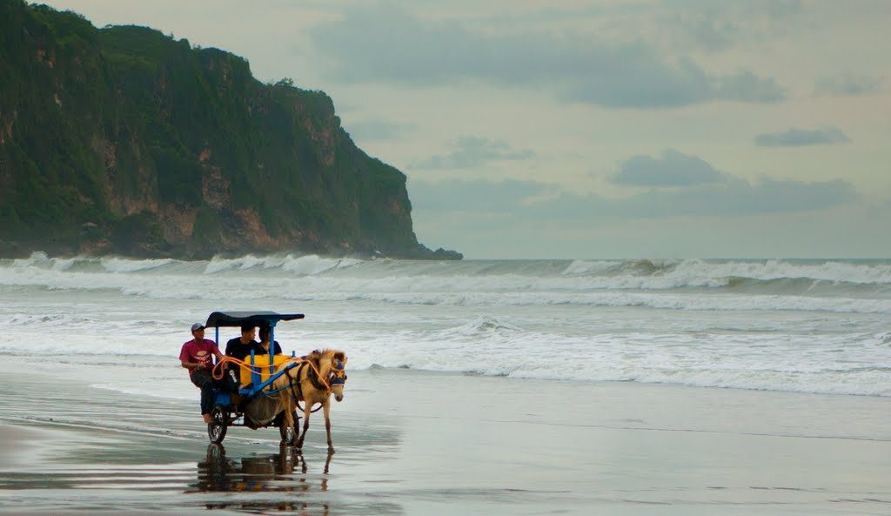

Sejarah

Berdirinya Kota Yogyakarta berawal dari adanya Perjanjian Gianti pada
Tanggal 13 Februari 1755 yang ditandatangani Kompeni Belanda di bawah
tanda tangan Gubernur Nicholas Hartingh atas nama Gubernur Jendral Jacob
Mossel. Isi Perjanjian Gianti : Negara Mataram dibagi dua : Setengah
masih menjadi Hak Kerajaan Surakarta, setengah lagi menjadi Hak Pangeran
Mangkubumi.
Geografis
Kota YKC secara garis besar Kota Yogyakarta merupakan dataran rendah
dimana dari barat ke timur relatif datar dan dari utara ke selatan
memiliki kemiringan ± 1 derajat, serta terdapat 3 (tiga) sungai yang
melintas Kota Yogyakarta, yaitu : Sebelah timur adalah Sungai Gajah Wong
Bagian tengah adalah Sungai Code Sebelah barat adalah Sungai Winongo
Wisata
Banyak wisata yang dapat ditemukan disini mulai dari wisata gunung,
kuliner, budaya, pantai dan masih banyak lagi
X-urang

Kaliurang terletak di daerah dataran tinggi, banyak resor atau tempat
peristirahatan karena udara sejuk yang banyak dicari oleh orang
perkotaan sehingga di sini terdapat banyak vila-vila penginapan
(kebanyakan orang sekitar menyebutnya wisma). Tempat yang paling banyak
dikunjungi oleh wisatawan baik dalam maupun luar negeri adalah Tlogo
Putri, Gardu Pandang, Taman Kaliurang, Tankaman Natural Park, dan Nawang
Jagad.
Pantai Parangtritis

Pantai Parangtritis (Jawa: ꦥꦱꦶꦱꦶꦂ ꦥꦫꦁꦠꦿꦶꦠꦶꦱ꧀, translit. Pasisir
Parangtritis) adalah tempat wisata yang terletak di Kalurahan
Parangtritis, Kapanéwon Kretek, Kabupaten Bantul, Daerah Istimewa
Yogyakarta. Jaraknya kurang lebih 27 km dari pusat kota. Pantai ini
menjadi salah satu destinasi wisata terkenal di Yogyakarta dan telah
menjadi ikon pariwisata di Yogyakarta